Course: Computer Engineering
Semester: 1 (Direct Intake 25/26)
School: Universiti Teknikal Malaysia (UTeM)
Hi, I'm Muhammad Isa bin Jasni! You can call me Isa for short. I'm a student at Universiti Teknikal Malaysia, pursuing a degree in Computer Engineering.
Outside of my university coursework, I am an avid maker and hardware tinkerer. I spend my free time designing interactive and functional parts in Autodesk Fusion, and diving deep into 3D printer mechanics, from custom hardware upgrades to configuring and troubleshooting my projects.
Find my source code on GitHub or send messages to my Email.
Looking back at this Data Structures and Algorithms (DSA) course, I learned many new things that improved both my programming skills and the way I solve problems. Before this course, I mostly wrote bare-metal code for microcontrollers (MCUs) and simple C++ and Python programs. After learning DSA, I realized there are many algorithms and data structures that can make programs more efficient. I even thought about many of my old projects where I could have used these ideas.
Our lecturer made the class interesting by asking us to implement the algorithms ourselves instead of just reading slides. He guided us when needed and encouraged us to think about why one algorithm is better than another. This helped me understand the concepts better.
I also learned a lot from my classmates. Sharing my notes on Padlet helped me organize my understanding and explaining the topics made me remember them better. During our group project, we had problems combining everyone's code, but we solved it by discussing our ideas and planning the data structures before coding. This taught me that communication is just as important as programming.
Overall, this course gave me a strong foundation for my future as a Computer Engineering student. I am now more confident in writing better and more efficient code, and I believe these skills will be useful in my future career.
Designation: University Lecturer
Current Position: Senior Lecturer - Faculty of Electronics and Computer Technology and Engineering
My rating: 100000000/10, The best lecturer I got this semester!
These are some of the pictures I've taken during this semester, including my classmates and our lecturer.
These are the collaborative notes and contributions I've made along this semester on Padlet.
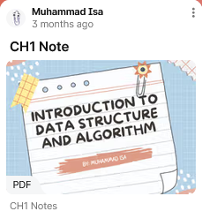
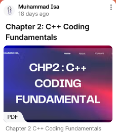
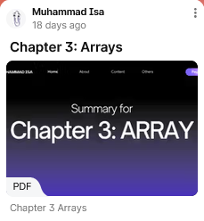
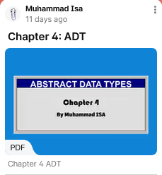
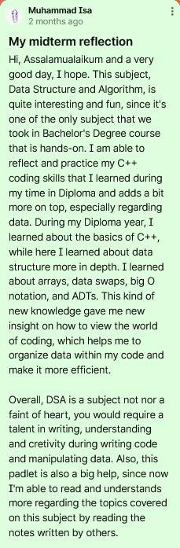
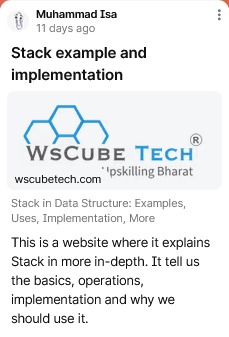
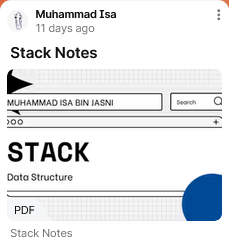
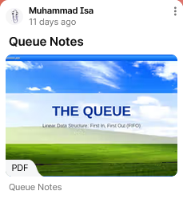
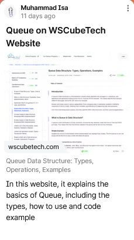
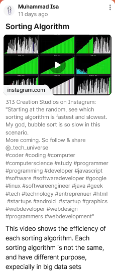
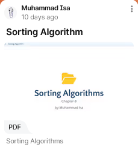
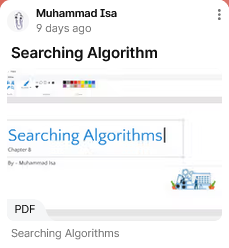
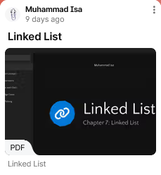
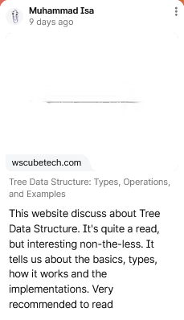
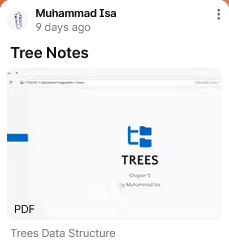